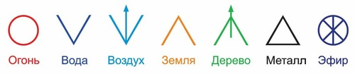

О стихиях
|
«Через образы ВОДЫ к нам приходит наполненье. |
Вначале был создан эфир — божественная мысль, откровение, древо, которое растворено во всех стихиях. Первым из элемента эфира появляется стихия эфира со своими качествами пространства и времени. Из элемента эфира рождается элемент воздуха –в котором действует стихия воздуха. В стихии воздуха проявляется элемент огня — активное творческое начало преображенное мыслью. С проявлением элемента огня появляется стихия огня. Из элемента огня проявляется элемент воды, и начинает проявляться стихия воды. С проявление всех трех элементов и стихий рождается элемент земля и начинает действовать стихия земли.
Знания первых мыслителей о стихиях уходят своими корнями в глубокую древность. Великий врач средневековья Авиценна писал о стихиях:
В любом из нас стихии тех четыре,
Круговорот их вечен в этом мире.
Избыток иль нехватка лишь одной
Грозят больному тяжкою бедой.
Аристотель добавил к четырём стихиям (воде, земле, огню и воздуху) тончайшую пятую стихию, пятый элемент – эфир. Платон считал, что Бог создал мир из эфира.
Основу древней китайской медицины составляло учение о двух противоположенных начал – Инь и Ян. Согласно этого учения они взаимодействуя рождают всё движение в мире и пять первоэлементов (первоначал, первостихий), которые являются основой всех вещей, это - вода, огонь, дерево, земля и металл.
В настоящее время согласно научной работе « Метод фазовых метаморфоз» В.П. Гоча и Я.С. Ибадова было определено семь стихий, это: Огонь, Вода, Воздух, Земля, Дерево, Металл и Эфир. В ней говорится: «Созданная нами классификация стихий позволяет устранить внесённый ранее хаос в информационное поле первоэлементов и через гармонию символов помочь человеку выйти на благоприятный уровень метаморфоз на пути развития сознания человека в Новом Времени».

Стихия – это состояние пространства, которое является следствием работы определенных принципов Вселенной.
Стихия Земля является отражением женского, пассивного начала. Обладает таким важным качеством, как переход в новую форму и рождение нового. Благодаря стихии Земля все процессы в теле работают стабильно и надёжно, имеют свою форму и подчиняются определённому порядку. Земля является основанием или каркасом жизни и содержится во всех твёрдых тканях и веществах.
Стихия Земли управляет теми моментами нашей жизни, которые являются переходными: в природе это смена времен года, в жизни человека – это время, когда нужно остановиться, подумать, заглянуть в себя и привести в порядок свои мысли, приготовиться и перейти к новому этапу в жизни. Дух Земли, находясь в балансе, обеспечивает нам логическое мышление, здоровую способность к критике, наделяет хорошей памятью. Эта стихия отвечает в нашей жизни за сострадание, понимание, сочувствие и любовь. Земля и её энергия даёт нам ощущения защищённости, благополучия, уверенности, безопасности и спокойствия.
Стихия Вода — это самая глубокая и сильная стихия Инь, связанная с женственной стороной личности. Являясь стихией, способной принимать любую форму, Вода может наделять разными по своей природе качествами. Спокойная вода в плавно текущей реке дарует умиротворение, мягкость и гибкость. Бурные течения наполняют энергией, бесстрашием и прямолинейностью. Эта стихия способствует взаимопониманию и общению, достижению мудрости путем проникновения в глубины подсознания, к источникам знания, трансформируя опыт во внутреннее знание. Она стимулирует становление личности и укрепление чувства собственного достоинства. В общении с людьми она помогает быть услышанным и правильно понятым. Кроме того, Вода является олицетворением тайны, загадки, поэтому символизирует духовный рост.
Вода, не имеющая постоянной формы, обретает ее во взаимодействии с материей. Поэтому земля, твердая и лишенная гибкости, легко находит общий язык с гибкой и мягкой водой. С другой стороны, вода еще и чувственно подпитывает землю, превращая сухую материю в плодородную почву.
Стихия Воды, согласно принципу монады, Великому пределу Тай-цзы, принципу Инь-Ян, создаёт гармонию и равновесие во всех явлениях Вселенной, влияет на процесс женского лунного начала. Это проявляется в присутствии воды во всех клетках живых и условно «неживых» объектов Вселенной: минералах, растениях, в царстве животного и человека. Вода всегда гасит пламя, грозящее катастрофой, превращая его в пар, который затем превращается опять в воду.
Прекрасным примером силы стихии Воды служит высказывание китайского ученого XI века:
Из всех стихий в качестве своего наставника мудрец должен взять воду. Вода уступчива, но всепобеждающа. Вода тушит Огонь или, признавая себя как бы потерпевшей поражение, исчезает в виде пара и снова возвращается. Вода смывает мягкую Землю или, натолкнувшись на скалы, ищет обходной путь... Она насыщает атмосферу, чтобы затих Ветер. Вода с обманчивой скромностью уступает препятствиям, так как никакая сила не может помешать ей следовать по предназначенному курсу к морю. Вода побеждает своей уступчивостью; она никогда не атакует, но всегда побеждает в решающей битве.
Стихия Огонь – это символ движения и развития, пик активной силы Ян. Эта стихия символизирует энергию и действие. Она относится к универсальной энергии излучения, экспансивной и восторженной энергии, которая посредством своего света приносит цвет в этот мир. Карл-Густав Юнг связывал эту стихию с динамическим центром психической энергии, с той энергией, которая течет спонтанно вдохновенным, самомотивирующимся образом.
Стихия Огня в природе и в человеке существует на разных уровнях, хотя основа у них одна. Огонь – это начало и основа духа, это то, что поможет преобразовать внутреннюю духовную природу личности. Именно стихия Огня является первоосновой любой деятельности, любой активности. Божественная энергия, которая находится внутри каждого человека, не случайно имеет огненное воплощение: человек, получающий откровение, ощущает обновление, он преобразуется, как бы проходит через Огонь, сжигая своё старое и получая новое. Образ Огня лежит в основе всех творений, любой деятельности.
Любовь правит миром, а стихии Огня и Воды, находясь в балансе, помогают ей оставаться самым прекрасным, чистым и благородным чувством в нашей жизни, принося радость и счастье.
Стихия Воздух — это стихия пространства и умственной активности, нервная система мира. Стихия Воздуха рождается в результате движения эфира. Воздух окружает нас со всех сторон, проникает всюду, не имея преград, обладая легкостью, подвижностью, естественно, он не имеет устойчивости своих форм, он везде и всюду имеет тенденцию заполнить любой вакуум. В этом он очень схож со стихией Воды. Воздушная стихия связана с геометрическими силовыми линиями, действующими через разум, с энергией, которая формирует структуру предстоящих вещей. Тогда как огненные знаки заняты желанием претворить что-то в жизнь, воздушные знаки фокусируют свою энергию на определенных идеях, которые еще не материализовались, но концентрация на этих идеях гарантирует, что со временем они материализуются. Поэтому, хотя воздушные знаки часто обвиняют в непрактичной мечтательности, они играют существенную роль в осуществлении творения на широчайшем общественном уровне, так как их идеи могут со временем затронуть жизни миллионов людей.
Стихия Дерево — это энергия роста, развития, творчества и перемен. Оно символизирует начало новой жизни, молодость, обновление и в то же время — силу и мощь, которые необходимы для движения вперед, достижения поставленных целей и жизненных преобразований. Оно дарует чувство защищенности и надежности, стабильности и уверенности в завтрашнем дне. Кроме того, Дерево является символом внутреннего знания и интуиции. Будучи энергией активной и шумной, стремящейся вверх и в стороны для того, чтобы познавать, получать опыт и знания, она нуждается в свободе и просторе. Жесткие рамки и ограничения приводят к ее искажению и проявлению самых ее негативных качеств.
Дерево обладает мощнейшей энергией, чему вряд ли стоит удивляться, если вспомнить, сколько времени и энергии необходимо дереву, чтобы вырасти. Энергия Дерева обладает магическими свойствами; именно поэтому в течение многих столетий в самых различных культурах деревья считались символами роста и плодородия. Символом созидания выступает движение, направленное вверх, которое возносит нас над землей, над известной нам реальностью. Даже несмотря на то, что наши корни держатся в земле, мы можем вознестись до самых небес. Стихия Дерево покровительствует творчеству, семье и браку.
Стихия Металл – это твёрдость, решительность и непреклонность. Сущность стихии выражается во внутренней концентрации, в накоплении энергии.
Энергия стихии Металла ясная, беспристрастная и в то же время активная и твердая. Это энергия контроля и управления, но при этом дающая возможность видеть перспективы и новые возможности. Она способствует целостному видению, достижению результата и принятию решения, а также стимулирует умственные процессы. В отношениях с людьми она помогает достигать взаимопонимания и гармонии, делая их открытыми и доверительными. Ее свойство помогать видеть ситуацию или предмет целиком, учитывая все составляющие, позволяет достигать ясности и приходить к договоренности. Поэтому ее благоприятно использовать в офисах и переговорных.
На уровне земли и природы стихия Металла проявляется в местах наибольшего скопления энергии. Люди в таких местах с древних времен, ощущая какой-то магнетизм и неведомую силу, ставили церкви и храмы, различные сооружения культа, а учёные называют такие места скоплением квантовой энергии или квантовыми полями.
Стихия Эфир пронизывает и окружает всю Вселенную. Нет ни одного физического объекта, который бы не был наполнен и окружён эфиром. Эфир - особое всепроникающее вещество, невесомое, невидимое и упругое, наполняющее Вселенную.
Эфир влияет на все чувства, мысли, чаяния, желания, надежды, настроение, здоровье и поступки человека. Из эфира рождается материальный мир, который спустя время вновь трансформирует в него. Эфир обладает самой тонкой природой и высокой проникающей способностью, благодаря чему способен впитывать в себя материальные качества других веществ.
«Эфир – это то, из чего создан Мир и Он заполняет не только всё макро пространство, но и весь микромир. Эфир – это и колоссальные запасы внутренней энергии. Он питает энергией звезды, продлевая их жизненный цикл, и элементарные частицы, не позволяя электронам израсходовать всю имеющуюся в них энергию и упасть в бессилии на ядро атома.» (Е.П. Блаватская).
Стихия Эфир отождествлена с властью Бога, объединяющего, управляющего, с началом жизни. Без силы объединяющего Духа работа стихий может вести к хаосу.
В окружающем мире (макрокосмосе) человек является миром в миниатюре (микрокосмосом), отражением Вселенной. В каждом из нас, в каждом органе, клетке, присутствуют все стихии. Существует прямая зависимость физического здоровья и достаточности энергии всех стихий в энергетической структуре человека. Поскольку в каждой стихии заключена необъятная и необъяснимая энергия Космоса, стихия аккумулирует эту энергию и каждый может воспользоваться этой энергией, для восстановления жизненной силы, духовного и материального благополучия.